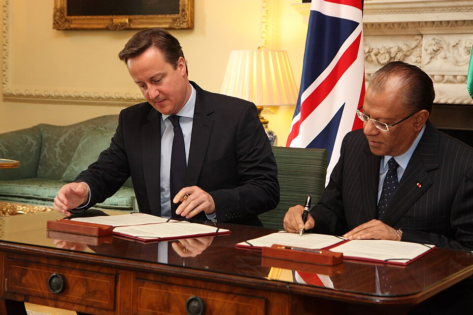

Mauricio es uno de los países más estables de África, un destino turístico de ensueño donde la democracia y la estabilidad económica han logrado imponerse a siglos de colonialismo. Sin embargo, protestas violentas han puesto al país en vilo después de que la policía disparase a una mujer en el cuello. Con el deterioro de las condiciones de vida de fondo, no parece haber ningún país del mundo en el que la estabilidad sea algo seguro en 2026.
La única democracia plena
Mauricio es una pequeña isla al este de Madagascar con poco más de un millón de habitantes. El país cuenta con un robusto estado del bienestar y una economía basada en el sector financiero, las exportaciones agrícolas y el turismo. Según el Índice de Democracia de The Economist, es la única “democracia plena” de África (clasificación que países como Estados Unidos, Italia o Bélgica no logran). Todos estos factores son la razón por la que no se vivían grandes movilizaciones en el país desde 1999, cuando un conocido músico murió en custodia policial.
A pesar de ello, el 8 de octubre varios distritos del país vivieron grandes protestas. En el momento de la movilización, la principal reserva de agua del país se encontraba al 35,9% mientras que en las mismas fechas del año anterior estaba al 88,6%. Por ello, el gobierno del laborista Navin Ramgoolam decretó el racionamiento del agua.
Al mismo tiempo, al igual que muchos otros países en el mundo, Mauricio está sufriendo una importante inflación. En 2025, los precios subieron un 4,1%, más que en España donde fue un 2,7%. Estos dos problemas confluyeron en protestas que consistieron en el bloqueo de carreteras.
Estas protestas se mantuvieron pacíficas hasta que el 9 de octubre en un bloque de carretera un policía disparó contra una viandante que tuvo que ser operada durante 7 horas. A partir de ese momento, el movimiento se esparció por todos los distritos del país y al bloqueo de carreteras se le sumó actos de vandalismo y la quema de varias comisarías de policía.

El primer ministro británico, David Cameron (izq), y el primer ministro mauriciano, Navin Ramgoolam (dcha), firman un acuerdo (2012)
Fuente: Foreign, Commonwealth & Development Office
Una fuerte respuesta
El gobierno de Mauricio estableció un toque de queda a partir del 13 al ver que las protestas solo subían de intensidad. Las escuelas fueron cerradas y líneas de metro cortadas por seguridad. El primer ministro aseguró que detrás de los disturbios se encontraban traficantes de droga y que los detenidos por actos violentos serían juzgados por la Ley de Prevención del Terrorismo.
Estas duras medidas han causado preocupación en miembros de la oposición por un posible giro autoritario en la democracia más estable de África. El ex-aliado de Navin Ramgoolam, Paul Bérenger, aseguró que el primer ministro ha debilitado los equilibrios constitucionales y ha visto la confianza de la población debilitada.
El toque de queda se levantó el 19 de octubre tras la vuelta a la paz con un balance de al menos 94 detenidos. No obstante, la mayor crisis política de Mauricio en lo que llevamos de siglo aún no ha terminado. El aumento del coste de la vida en todo el mundo ha provocado que estas protestas sean cada vez más comunes. Con el fantasma de su homólogo malgache siendo derrocado el año pasado por manifestaciones que llevaron a un golpe de estado, Mauricio ya no puede asegurar la estabilidad de la que ha solido hacer gala.